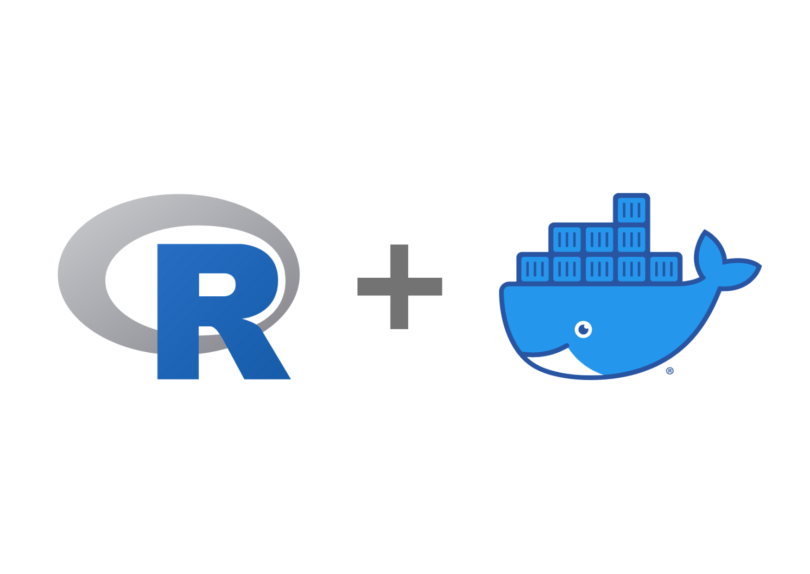

2023
Julia
Python
R
Quarto
Stata
A common misunderstanding about Quarto is that we cannot use multiple languages within a document. Indeed, Jupyter cannot use multiple languages within a document, and we usually use the…

No matching items
2022
Some Quarto Tips for Academic Presentation
R
Quarto
The other day, I used slides made with Quarto in a presentation at a conference. In the Economics community, 98% of people use Beamer of \(\LaTeX\), and about 2% use PowerPoint for their presentations. I personally don’t like Beamer’s design, and I think PowerPoint has a problem with maintainability (i.e., can it be…

R
Docker
Docker is one of the best environments for reproductivity of the research. I use Docker for basically all my…

No matching items